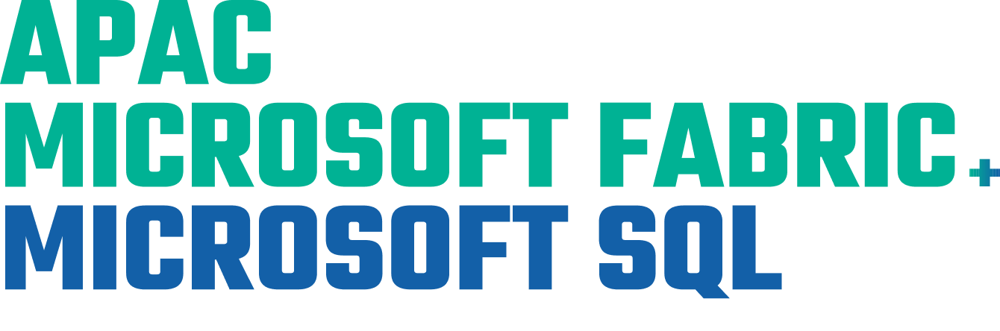
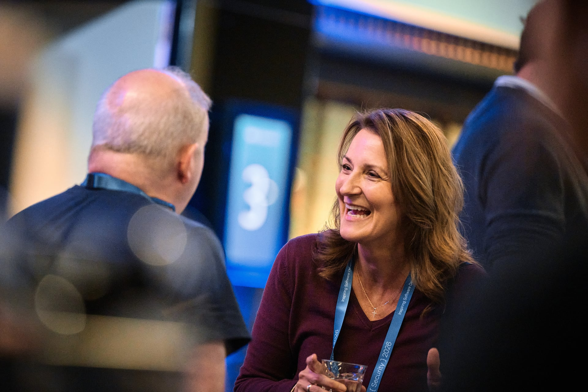
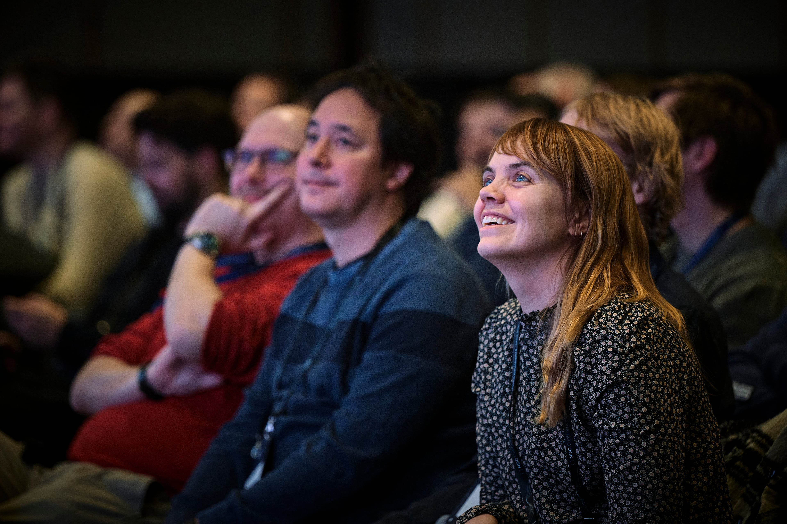
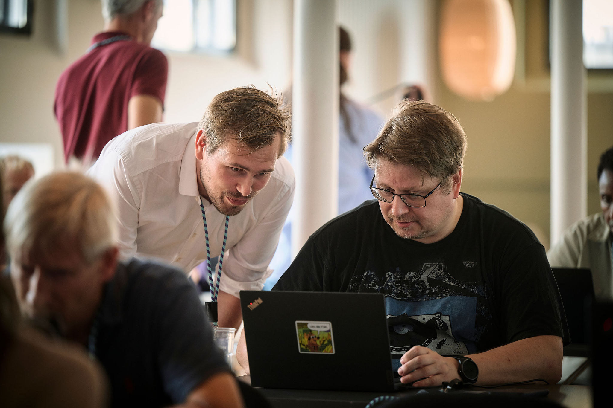
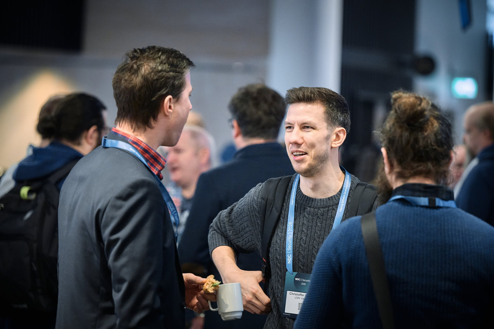
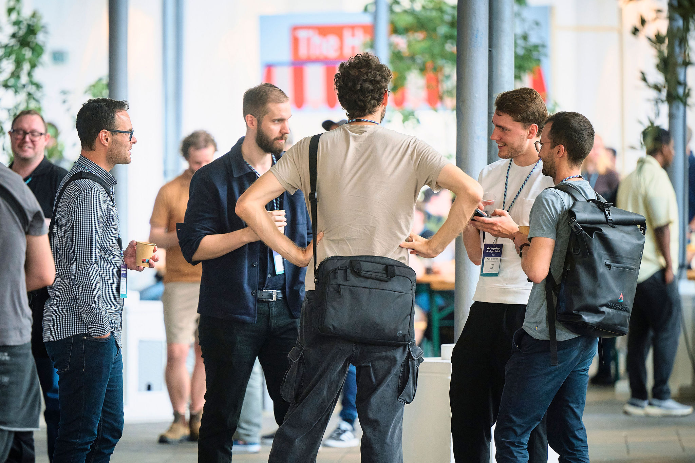

April 6–9, 2027 | ICC Sydney
View ticket prices →Sign up for the latest news and updates
The Microsoft Fabric and SQL community conference, built for Asia-Pacific
For years, the biggest Microsoft data community events have been in the USA and Europe. If you work with Fabric or SQL in Asia-Pacific, you either flew a long way or you watched the recordings. This is the version that belongs here — built for this region, by the community that actually works in it. Not a vendor showcase. Not a product launch in disguise. A conference where data engineers, analysts, BI developers, and SQL professionals from across Asia-Pacific share what's actually working.
It starts in Sydney at ICC Sydney in April 2027, then moves to a new city across the region each year. Four days in total — workshops on Tuesday 6 April, followed by three days of conference sessions from Wednesday 7 to Friday 9 April. The Fabric conference covers data engineering, analytics, BI, governance, and AI. The SQL conference runs alongside it, covering SQL Server, Azure SQL, and the broader data platform. One ticket covers both. Microsoft is on board as a sponsor and will have product and engineering leads in the room — people who can talk about what's real, not just what's on the roadmap slide.

Why this one's worth the trip
Five days in Sydney with the practitioners, product teams, and peers you've been wanting to get in the same room with.

Microsoft, in the room
Product and engineering leads from the Fabric and SQL teams will be on stage in Sydney. Not a livestream, not a pre-recorded session — people you can actually talk to, who are working on what ships next.

Full-day workshops
Pre-conference workshop days across Fabric and SQL tracks. Come with a laptop and a real problem. Leave with something you can actually use on Monday morning.
Two conferences, one ticket
Practitioner-led sessions across data engineering, analytics, Power BI, governance, AI, SQL Server, and Azure SQL. No vendor pitches dressed up as talks. Content from people who've actually shipped it.

Your APAC peers, in one place
Data professionals from across the region — Australia, New Zealand, Southeast Asia, Japan, India — all working in the same ecosystem, dealing with similar challenges. This is the room where those conversations finally happen.

Access you don't usually get
With Microsoft sponsoring both conferences, you get real time with PMs and engineers from the Fabric and SQL teams. The kind of access that's hard to come by when you're not based in Redmond.
Stories from organisations doing it here
Case studies from companies across Asia-Pacific running Fabric and SQL in production — the decisions they made, what didn't work, and what they'd change. The honest version, told by the people who lived it.